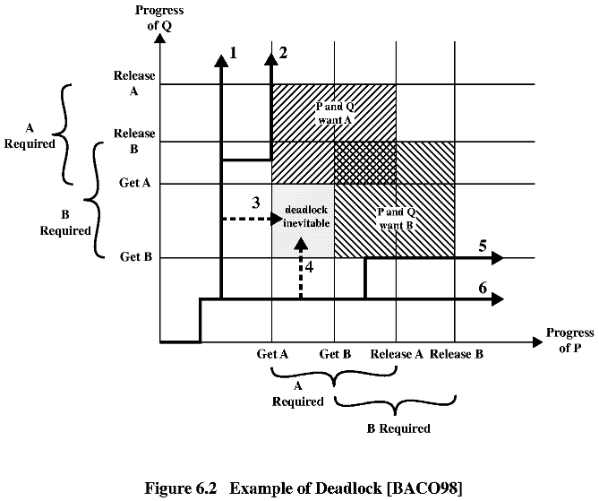
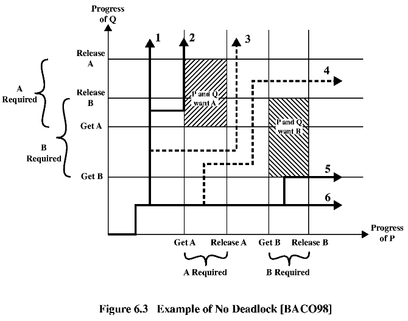
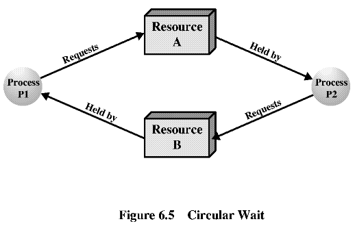

|
PROCESS P
... Get A ... Get B ... Release A ... Release B ... |
PROCESS Q
... Get B ... Get A ... Release B ... Release A ... |
|
PROCESS P
... Get A ... Get B ... Release A ... Release B ...
PROCESS Q
|
 |
Възможна промяна в работата на процеса - за избягване на МХ:
|
PROCESS P
... Get A ... Release A ... Get B ... Release B ...
PROCESS Q
|
 |
** Многократно използваеми ресурси (Reusable Resources) - процесори, I/O канали, основна и допълнителна памет, устройства, структури от данни като файлове, бази данни и семафори.
Пример 1.
Два процеса P и Q използват ресурси магнитен диск
D и магнитна лента T.
Process P
|
Process Q
|
Пример 2.
Два процеса се конкурират за ресурс 200КB памет.
| Process P1 | Process P2 |
|
...
Request 80 KB ... Request 60 KB |
...
Request 70 KB ... Request 80 KB |
** Условия за МХ.
1. Взаимно изключване (mutual exclusion) - само
един процес може да владее ресурс в даден момент.
2. Владея и чакам (очакване на ресурси, hold and
wait) - един процес блокира (владее) един ресурс, докато чака за друг.
3. Няма отстъпки (непреразпределение, no preemtion)
- един ресурс не може да бъде насилствено освободен от владението на процес.
МХ може да се появи при тези 3 условия, но може
и да не се появи. Следващото условие е достатъчно за поява на МХ.
4. Циклично чакане (circular wait) - затворена
верига от процеси, като всеки процес владее пони един ресурс, за който
чака следващият процес от веригата.

6.3 Избягване (avoidance) на МХ
Два подхода при избягване на МХ:
-- да не се стартира процес, който води до МХ;
-- да не се дава ресурс на процес, ако това води до МХ.
Изисква се предварителна информация за необходимите
расурси на всеки процес.
** Отказ за стартиране на процес.
Дадени са:
C - матрица на исканията на всеки
процес за всеки ресурс;
R - вектор на всички налични
ресурси;
A - матрица на дадени на всеки процес
ресурси (състояние на системата);
V - вектор на свободните ресурси.
Стартираме процес, само ако всичките му необходими
ресурси са "излишни", т.е. те са свободни в момента и при удовлетворяване
на всички искания на всички активни процеси пак ще останат свободни.
Пример.
|
Матрица C
R1 R2 R3 P1 1 1 2 активен P2 6 1 3 активен P3 2 1 0 P4 4 0 2 |
Матрица A
R1 R2 R3 P1 1 0 0 P2 6 1 2 P3 0 0 0 P4 0 0 0 |
|
Вектор R
R1 R2 R3 9 3 6 |
Вектор V
R1 R2 R3 2 2 4 |
** Отказ за даване на ресурс - алгоритъм на банкера.
Безопасно (сигурно) състояние на системата - съществува
такава последователност от изпълнение на процесите, при която всички процеси
завършват успешно (няма МХ). Опасно (несигурно) състояние - всяко друго.
Пример на безопасно състояние и изпълнение на процесите.
Начално състояние
|
Матрица C
R1 R2 R3 P1 3 2 2 P2 6 1 3 P3 3 1 4 P4 4 2 2 |
Матрица A
R1 R2 R3 P1 1 0 0 P2 6 1 2 P3 2 1 1 P4 0 0 2 |
|
Вектор R
R1 R2 R3 9 3 6 |
Вектор V
R1 R2 R3 0 1 1 |
|
Матрица C
R1 R2 R3 P1 3 2 2 P2 0 0 0 P3 3 1 4 P4 4 2 2 |
Матрица A
R1 R2 R3 P1 1 0 0 P2 0 0 0 P3 2 1 1 P4 0 0 2 |
|
Вектор R
R1 R2 R3 9 3 6 |
Вектор V
R1 R2 R3 6 2 3 |
|
Матрица C
R1 R2 R3 P1 0 0 0 P2 0 0 0 P3 3 1 4 P4 4 2 2 |
Матрица A
R1 R2 R3 P1 0 0 0 P2 0 0 0 P3 2 1 1 P4 0 0 2 |
|
Вектор R
R1 R2 R3 9 3 6 |
Вектор V
R1 R2 R3 7 2 3 |
|
Матрица C
R1 R2 R3 P1 0 0 0 P2 0 0 0 P3 0 0 0 P4 4 2 2 |
Матрица A
R1 R2 R3 P1 0 0 0 P2 0 0 0 P3 0 0 0 P4 0 0 2 |
|
Вектор R
R1 R2 R3 9 3 6 |
Вектор V
R1 R2 R3 9 3 4 |
Пример на опасно състояние и изпълнение на процесите:
Начално състояние
|
Матрица C
R1 R2 R3 P1 3 2 2 P2 6 1 3 P3 3 1 4 P4 4 2 2 |
Матрица A
R1 R2 R3 P1 1 0 0 P2 5 1 1 P3 2 1 1 P4 0 0 2 |
|
Вектор R
R1 R2 R3 9 3 6 |
Вектор V
R1 R2 R3 1 1 2 |
|
Матрица C
R1 R2 R3 P1 3 2 2 P2 6 1 3 P3 3 1 4 P4 4 2 2 |
Матрица A
R1 R2 R3 P1 2 0 1 P2 5 1 1 P3 2 1 1 P4 0 0 2 |
|
Вектор R
R1 R2 R3 9 3 6 |
Вектор V
R1 R2 R3 0 1 1 |
** Алгоритъм за откриване на МХ.
1. Маркираме процесите, които в A имат
само 0;
2. Създаваме но вектор W = V;
3. Намираме немаркиран процес, за който елементите на
реда на Q са по-малки или равни на елементите на вектора
W.
Ако няма такъв, стоп.
4. Към елементите на W добавяме
реда от матрицата A на намерения в т. 3 процес. Изпълнява
се т. 3.
Ако при завършване на алгоритъма има немаркирани процеси, значи имаме
открита МХ.
Пример:
|
Матрица Q
R1 R2 R3 R4 R5 P1 0 1 0 0 1 P2 0 0 1 0 1 P3 0 0 0 0 1 P4 1 0 1 0 1 |
Матрица A
R1 R2 R3 R4 R5 P1 1 0 1 1 0 P2 1 1 0 0 0 P3 0 0 0 1 0 P4 0 0 0 0 0 |
|
Вектор R
R1 R2 R3 R4 R5 2 1 1 2 1 |
Вектор V
R1 R2 R3 R4 R5 0 0 0 0 1 |
Първи опит за тривиално решение със семафори.
/* program dining_philosophers */
semaphore fork[5] = {1,1,1,1,1};
int i;
void philosopher(int i)
{
while(true)
{
think;
wait(fork[i]);
wait(fork[(i+1)%5]);
eat;
signal(fork[(i+1)%5]);
signal(fork[i]);
}
{
void main()
{
parbegin(philosopher(0), philosopher(1),
philosopher(2), philosopher(3),
philosopher(4));
}
Втори опит - решение със семафори:
/* program dining_philosophers */
semaphore fork[5] = {1,1,1,1,1};
semaphore room = 4;
int i;
void philosopher(int i)
{
while(true)
{
think;
wait(room);
wait(fork[i]);
wait(fork[(i+1)%5]);
eat;
signal(fork[(i+1)%5]);
signal(fork[i]);
signal(room);
}
}
void main()
{
parbegin(philosopher(0), philosopher(1),
philosopher(2), philosopher(3),
philosopher(4));
}